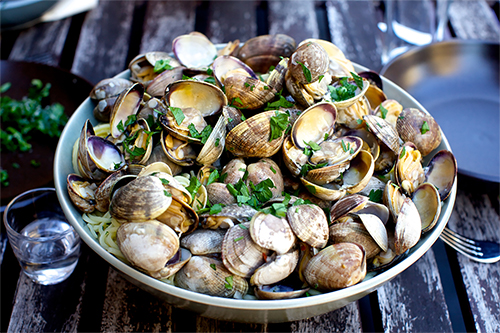
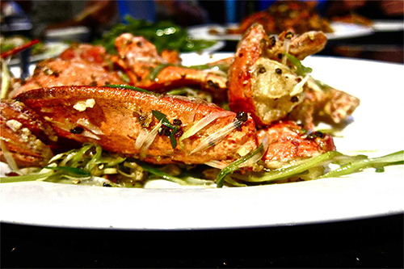

<!doctype html>
<html>
<head>
<meta charset="UTF-8">
<title>Responsive Images Practice</title>
	<link href="https://fonts.googleapis.com/css?family=Oswald" rel="stylesheet">
	<link href="https://fonts.googleapis.com/css?family=Alegreya" rel="stylesheet">
<style type="text/css">
body {
	padding: 0;
	margin: 0;
	background-image: url(images/background-small.jpg);
	background-size: cover;
	background-repeat: no-repeat;
	background-position: center center;
}
img {
	/* [disabled]width: 90%; */
}
#logo {
	margin-top: 21px;
	margin-left: 21px;
	width: 300px;
}
ul {
	margin: 0;
	padding: 0;
	list-style-type: none;
}
li {
	font-family: 'Oswald', sans-serif;
	margin-left: 263px;
	margin-bottom: 2px;
	color: #40230a;
	font-size: 2em;
	margin-top: -3px;
	padding-top: 0px;
	padding-right: 0px;
	padding-left: 0px;
}
h1 {
	font-size: 47px;
	text-align: left;
	font-family: 'Alegreya', serif;
}
p {
	padding: 0;
	margin-right: 6px;
	margin-bottom: 51px;
	font-size: 47px;
	font-family: 'Alegreya', serif;
}
wrapper  {
	width: 90%;
	margin: 0 auto;
	display: block;
}
wrapper picture img {
	width: 100%;
}

@media (min-width:70em) {
body {
	background-image: url(images/background-medium.jpg);
}
#food {
	width: 70%;
	margin-top: 20px;
}
#logo {
	margin-top: 25px;
	margin-right: auto;
	margin-left: auto;
	margin-bottom: 0;
	display: block;
}
ul {
	margin: 0 auto;
	width: 70%;
}
li {
	margin-left: -21px;
	display: inline-block;
	width: 20%;
	font-size: 1.2em;
	margin-top: 27px;
	margin-bottom: 0px;
	text-align: right;
	padding-top: 5px;
	padding-right: 5px;
	padding-bottom: 16px;
	padding-left: 5px;
}
p {
	font-size: 2em;
}
wrapper {
	width: 70%;
}
}

@media (min-width:125em){
body  {
	background-image: url(images/background-large.jpg);
}
#logo {
	margin-left: 56px;
	margin-top: 45px;
	width: 15%;
}
li {
	font-size: 1.5em;
	margin-left: -30px;
	margin-top: -53px;
}
ul {
}
h1 {
	font-size: 2.5em;
}
p {
	font-size: 1.8em;
}
h2 {
	font-size: 2.5em;
	margin-top: 16px;
}
section {
	width: 48%;
	float: left;
	display: block;
	margin-left: 15px;
}
.first {
	margin: 0;
}
}
</style>
<script src="js/picturefill.js"></script>
<script src="js/matchmedia.js"></script>
</head>

<body>
	<header>
    
	<ul>
		<li>SURPRISE ME!</li>
		<li>RECIPES</li>
		<li>BOOKS</li>
		<li>VIDEO</li>
		<li>MORE</li>
	</ul>
	</header>
	<wrapper>
    <section class="first">
      <picture> 
        <div data-picture data-alt="Steamed Clams with Parsley">
          <div data-src="images/food-small.jpg"></div>
          <div data-src="images/food-medium.jpg" data-media="(min-width: 32em)"></div>
          <div data-src="images/food-large.jpg" data-media="(min-width: 64em)"></div>
          <noscript>
            
          </noscript>
  </div>
        
  </picture>
      <h1>Linguine and Clams</h1>
      <p>It’s only the first day of summer and I’m already weeks deep into our unofficial dish of it, linguine alle vongole, preferably hastily prepared about 10 to 15 minutes before we dive in, eaten outside with a current favorite rosé, caprese salad and a massive bowl of kale caesar.</p>
    </section>
    <section>
      <picture> 
        <div data-picture data-alt="Lobster with Beer">
          <div data-src="images/food2-small.jpg"></div>
          <div data-src="images/food2-medium.jpg" data-media="(min-width: 32em)"></div>
          <div data-src="images/food2-large.jpg" data-media="(min-width: 64em)"></div>
          <noscript>
            
          </noscript>
  </div>
        
  </picture>
      <h1>Lobster with Beer and Black Pepper</h1>
      <p>Fried rice with salted fish and chicken; ong choy (water spinach) with garlic or with bean curd sauce; live surf clam sautéed with vegetables and served in its shell; pan-fried noodle with crabmeat; steamed live spot prawns.</p>
    </section>
	</wrapper>

</body>
</html>
